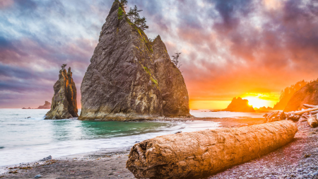
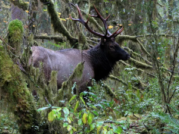

The State Capital
Olympia is the State Capital of Washington, residing on the West side of the state. A fun fact, "Hoh Rainforest is located in Olympic National Park on the west side of Washington, about two hours from Port Angeles. It's part of a group of four rainforests in the park, along with Quinault, Queets, and Bogchiel, that together form the world's largest temperate rainforest." Peglar, T.(2023)


Olmsted Archives

Map of Rainforests, Aimee Danielson.

NPS Photo
Here, we will talk about the analytical facts about Olympia Washington.
- The population of Olympia is, 299,003 as of 2024.
- The year Olympia was incorporated is: January 28, 1859
- The regin of the state where Olympia resides, is on the left side. Towards the coast.
- Olympia is an urban city.
- The average income in Olympia for the folks who live there is, $40,585
- You can find out more info, on the Wikipedia page.